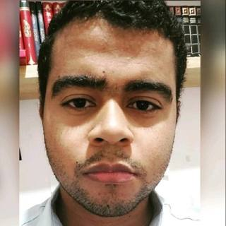

A Reproducible 10-Billion-Token Pretraining Run of GPT-2 124M
Technical report covering the training setup, evaluation and reproducibility of the Chris-GPT-2 pretraining run.

Software Engineer · ML Systems · Systems Software
Software engineer working across the computing stack — from production applications and ML systems to runtimes, compilers, virtual machines and operating systems.
I have worked professionally in software development since 2012. This site is an index of the systems I build, the research I publish and the technical areas I study.
GitHub · LinkedIn · Hugging Face · Email
I use personal projects as a vertical laboratory for understanding computation end to end rather than as isolated demos.
models → inference → ML runtime → toolchains / VMs → operating system → hardware
My professional work sits above and across this stack: enterprise systems, APIs, desktop and web applications, fiscal and retail software, infrastructure and internal engineering tools.
An experimental x86-64 operating system and low-level playground for building kernels, memory management, drivers, graphics, filesystems, compilers, assemblers, linkers, virtual machines and emulation components from scratch.
C · C++ · x86-64 · OSDev · Compilers
An experimental LLM inference runtime in C for studying GGUF loading, tokenization, attention, KV cache, quantization, memory layout and CPU/GPU execution without hiding the implementation behind a large framework.
C · GGUF · inference · quantization · CPU/GPU
A learning-oriented deep learning framework built from scratch with tensors, automatic differentiation, neural-network components, optimizers and accelerated execution backends.
C++ · Python · autograd · neural networks · GPU
An independent, bilingual reference for computer science and software engineering, covering foundational topics in data structures, algorithms, operating systems, databases and system design. Built with a static publishing pipeline, full-text search, structured learning tracks, editorial validation and automated deployment.
Python · Jinja2 · Markdown · JavaScript · GitHub Actions
A market and portfolio-intelligence workspace combining multi-portfolio accounting, cross-asset data, digital assets, risk-adjusted analytics and structural research integration.
JavaScript · Cloudflare Workers · market data · risk analytics
Selected commercial and applied software. These projects complement the systems and ML work above with application architecture, data consistency, integrations and operational tooling. Their source repositories are private; links below point to public product sites.
A local-first workspace for documents, tasks, boards, files and team communication. The implementation includes IndexedDB-backed offline mutations with batch replay and retry handling, an operation-based collaborative editor with deterministic convergence tests, WebSocket updates and resource-level access policies.
Next.js · NestJS · TypeScript · PostgreSQL · Redis · IndexedDB · WebSockets
A social-commerce platform integrating storefronts, catalog, carts, checkout, short-form content and live shopping. Its backend separates domain, application and infrastructure concerns; seller analytics covers event ingestion, deduplication and funnels, while real-time services support shopping interactions and a controlled AI-assisted shopping interface.
NestJS · React · TypeScript · Prisma · PostgreSQL · Redis · Socket.IO
A multi-account digital identity and relationship-management SaaS spanning business cards, landing pages, forms, lead capture, CRM, proposals and commercial workflows. Engineering work includes authenticated APIs, public publishing flows, contact synchronization, analytics and integrations for payments and media storage.
NestJS · React · TypeScript · Prisma · PostgreSQL · Cloudflare R2 · Stripe / Asaas
A desktop disk-analysis and cleanup utility with native Windows filesystem enumeration, NTFS USN Journal monitoring, resumable catalog scans, binary indexing, an optional background Windows service and safety rules for cleanup operations. A separate multilingual Christian Software storefront supports the product's distribution and licensing.
C# · .NET 8 · Avalonia · Win32 / P/Invoke · LiteDB
A course-management platform with lessons, progress tracking, administrative publishing tools and paid enrollment. Built around a Next.js application, Prisma persistence, Clerk authentication and Asaas payment flows and webhooks.
Next.js · TypeScript · Prisma · PostgreSQL · Clerk · Asaas
Technical report covering the training setup, evaluation and reproducibility of the Chris-GPT-2 pretraining run.
Study of continued pretraining and canonical instruction tuning for a Linux-focused GPT-2, including failure analysis.
I work on internal management and engineering systems covering finance, accounting, production planning and engineering. The stack includes C++, Delphi, MySQL, .NET/C#, React and PostgreSQL, with APIs, automated tests and architecture patterns such as DDD and CQRS.
Built web, mobile and desktop products for retail automation, fiscal documents, delivery, ticketing and messaging. Worked with PHP/Laravel, Angular, Vue, PostgreSQL, Java/Kotlin, React/Ionic, Delphi, Linux/Windows Server, AWS, DigitalOcean and Cloudflare.
Worked on retail automation, SAT fiscal processing, desktop update infrastructure, PHP/CodeIgniter APIs, PostgreSQL, Redis, internal tooling and cloud storage/querying of fiscal documents.
Started professionally with Delphi and later worked with PHP/MySQL, Python-based SMS tooling, GeneXus applications, R&D, AWS administration and OpenVPN.
Postgraduate study focused on electronics, robotics and autonomous systems.
Machine learning, deep learning, NLP, computer vision, big data, statistics, databases and software engineering.
In progress. Electrical engineering, mathematics, control, electronics and related engineering foundations.
Technical training across electronics, mechanics, automation and embedded systems.
Languages: C, C++, Python, Rust, C#, Java, Kotlin, JavaScript/TypeScript, PHP and Delphi.
Systems & ML: Linux, LLM training/inference, GPU computing, distributed training, operating systems, compilers, virtual machines, emulators and low-level debugging.
Application engineering: .NET, React, Laravel, REST APIs, PostgreSQL, MySQL, Redis, DDD, CQRS and automated testing.
Infrastructure: Git, GitHub Actions, Cloudflare, AWS, DigitalOcean and Linux/Windows Server.
GitHub · LinkedIn · Hugging Face · Email
For a compact professional version, see the HTML résumé or download the PDF.